Guía de uso oficial para estudiantes, tutores, jurados y coordinadores del Decanato de Ingeniería y Afines, Universidad de Margarita.
El SKMS-Unimar (Scientific Knowledge Management System) es la plataforma oficial del Decanato de Ingeniería y Afines de la Universidad de Margarita (UNIMAR) destinada a la gestión del ciclo de vida completo de la producción científica institucional.
A diferencia de un repositorio pasivo de archivos, el SKMS-Unimar es un sistema activo basado en flujos de trabajo que guía al estudiante, tutor, jurado y coordinador de investigación a través de cada fase del desarrollo, revisión y publicación de trabajos de grado, tesis e informes de investigación.
El sistema implementa un motor de estados que condiciona las acciones que cada rol puede realizar sobre un documento:
[ Borrador ] --(Enviar)--> [ En Revisión ] --(Aprobar)--> [ Aprobado ] --(Publicar)--> [ Publicado ]
^ |
| v
+---(Correcciones)<-----------+ --(Rechazar)--> [ Rechazado ]
El acceso a las funcionalidades del SKMS-Unimar está regulado mediante Roles y Permisos estrictos:
| Rol | Descripción Principal | Permisos Clave |
|---|---|---|
| Estudiante | Autor de la investigación. | Crear borrador, subir PDF, responder observaciones, ver progreso personal y línea de tiempo. |
| Tutor | Mentor principal del trabajo de grado. | Visualizar PDF asignados, agregar observaciones estructuradas, cambiar estado a Requiere Correcciones, Aprobado o Rechazado. |
| Jurado | Evaluadores académicos del documento final. | Visualizar PDF asignados, agregar observaciones y calificar/aprobar el trabajo. |
| Coordinador | Responsable de investigación del Decanato. | Validar metadatos (Dublin Core), publicar documentos aprobados, monitorear progreso general, generar reportes de exportación y ver estadísticas. |
| Administrador | Administrador de la plataforma. | Configurar programas académicos, líneas de investigación, periodos académicos, control de usuarios e historial de auditorías. |
Para acceder a la plataforma:
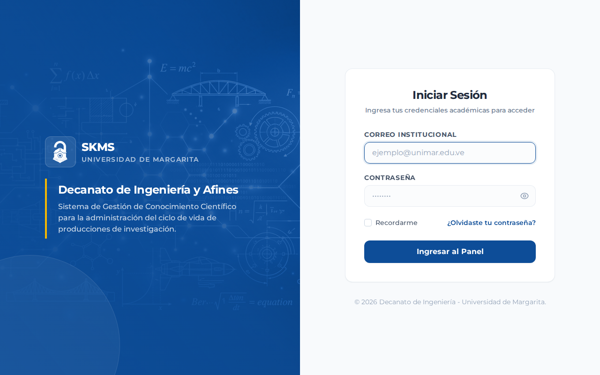
El estudiante tiene acceso a un portal dedicado para registrar sus propuestas, realizar entregas, monitorear las correcciones solicitadas por sus revisores y ver su progreso académico.
Al iniciar sesión, el estudiante ve de inmediato el estado de sus producciones científicas, las notificaciones pendientes y el progreso general expresado en un porcentaje estimado.
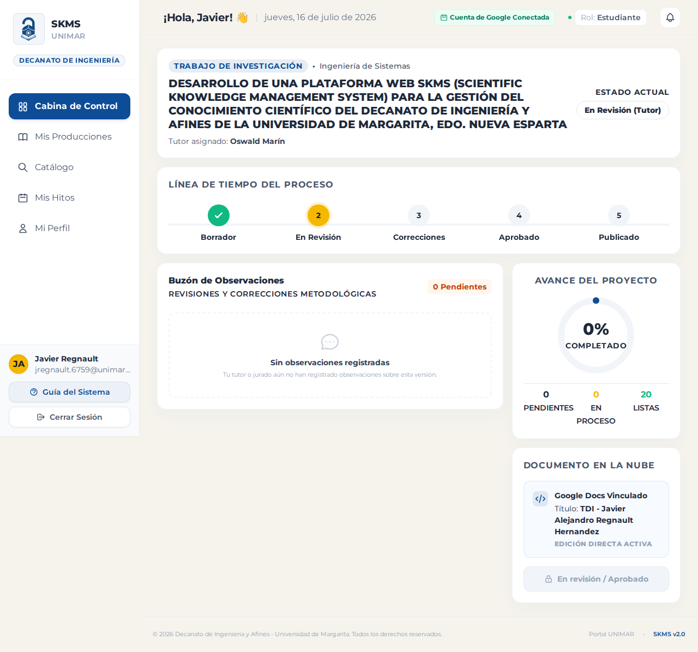
Para iniciar el registro de un nuevo trabajo de grado o artículo científico:
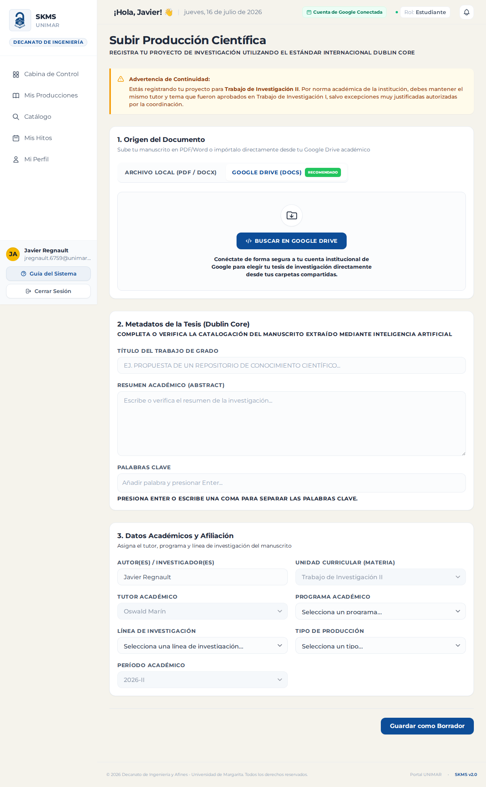
Desde el listado de producciones, puede verificar el estado actual de su trabajo. Cuando el documento esté listo y cumpla con las especificaciones de su tutor, haga clic en el botón Enviar a Revisión. Esto cambiará el estado a En Revisión y bloqueará la edición del documento para el estudiante mientras el tutor lo evalúa.
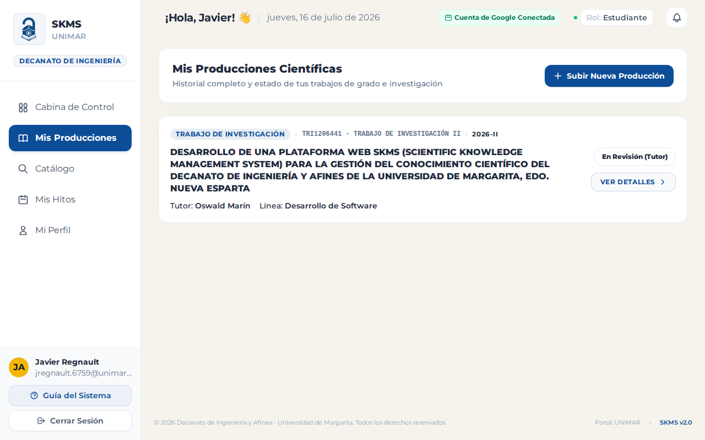
Si el tutor o jurado marca el documento como Requiere Correcciones:
Los revisores cuentan con herramientas para auditar la calidad académica sin necesidad de descargar el archivo externamente, permitiendo un flujo de retroalimentación ágil.
El tutor visualiza en su dashboard las producciones científicas donde ha sido asignado. El sistema indica con alertas visuales aquellos documentos que tienen entregas pendientes por revisar.
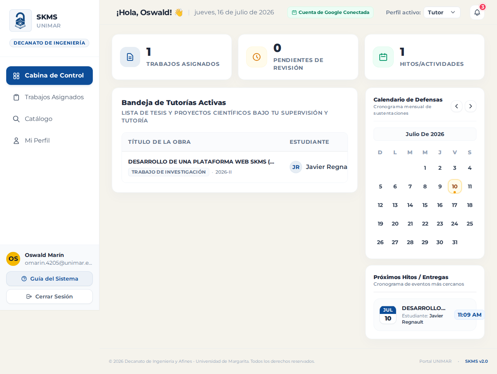
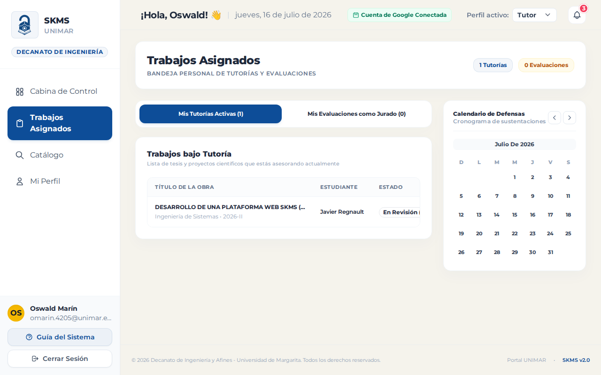
Tras evaluar la entrega, el tutor/jurado puede presionar el botón de transición para:
El Coordinador supervisa el flujo general de trabajos del Decanato, valida los datos técnicos antes de la publicación definitiva y genera análisis macro.
El Coordinador puede acceder a un dashboard donde visualiza la lista de estudiantes con sus respectivos tutores asignados, estado del flujo de su tesis y el porcentaje de hitos completados.
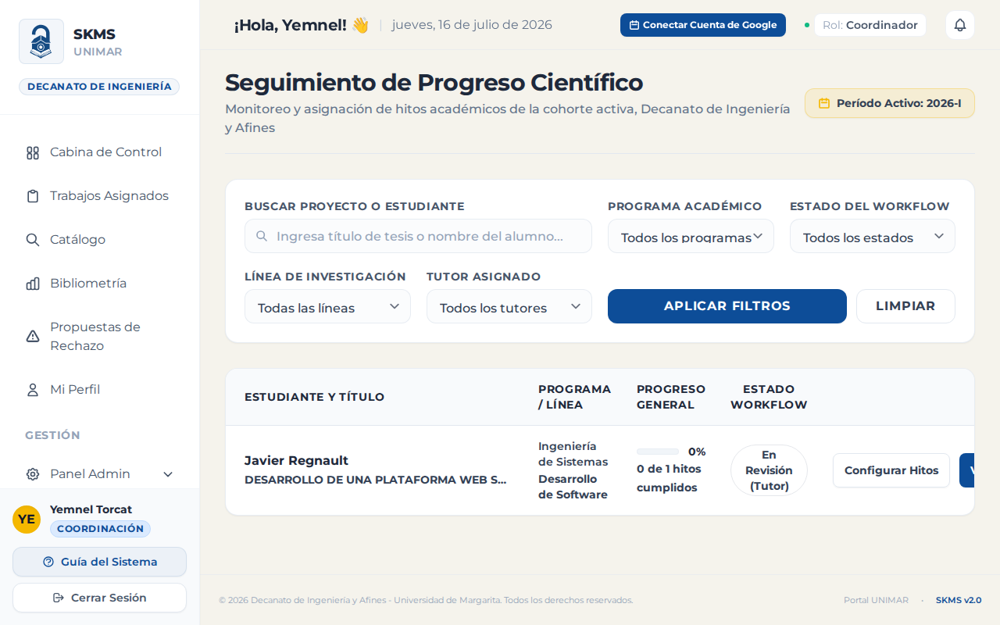
Esta sección muestra de forma visual mediante gráficos:
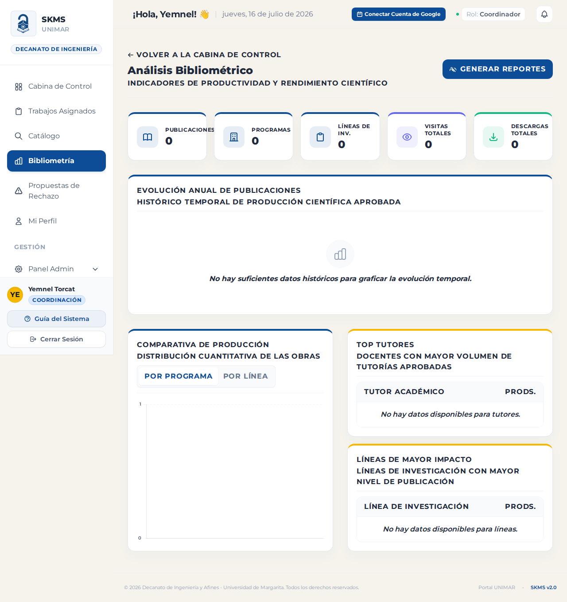
El Coordinador puede generar reportes personalizados en formatos PDF (usando dompdf con portada institucional) y Excel con filtros por programa académico, periodos, tutores o estados de flujo.
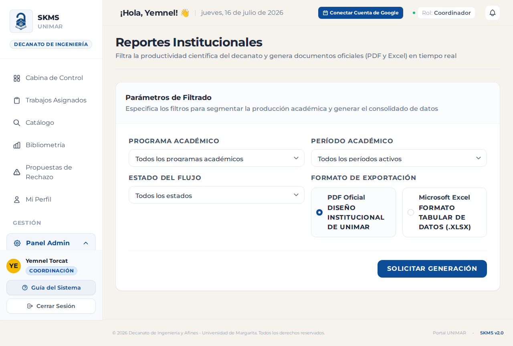
El panel administrativo permite mantener actualizados los catálogos y registrar las variables globales que definen el comportamiento de la aplicación.
Permite al administrador buscar, crear, editar y asignar roles específicos a los miembros de la comunidad universitaria.
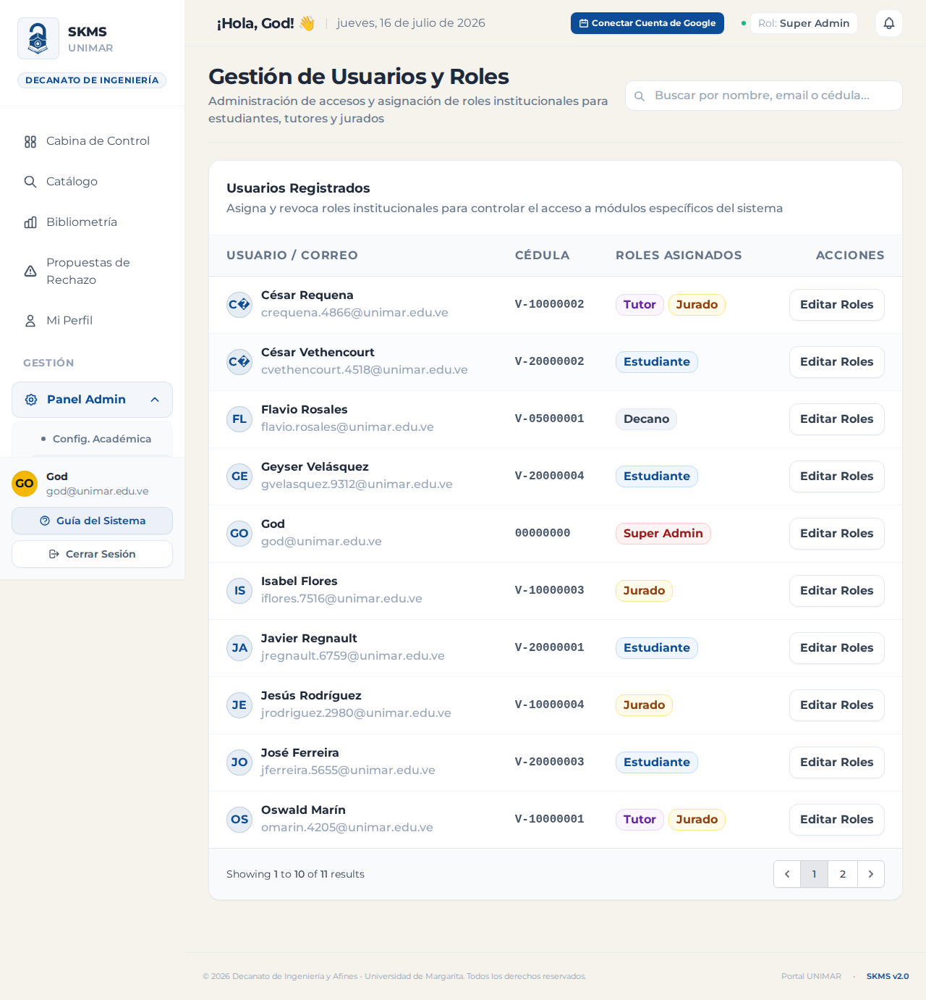
CRUD para registrar las carreras (programas) dictadas en el decanato y sus respectivas líneas de investigación asociadas, facilitando la categorización de los metadatos.
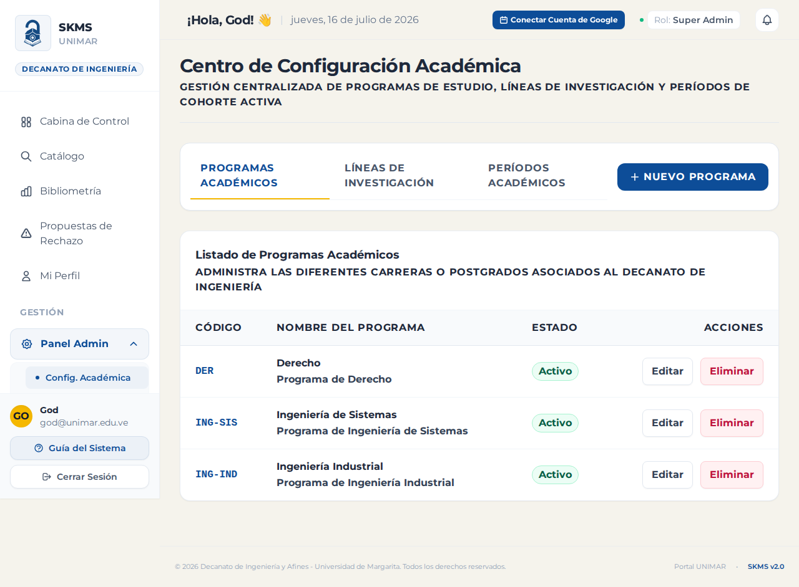
Configura las fechas de inicio/cierre de los semestres académicos y los hitos obligatorios del progreso de tesis (ej. Entrega de Capítulo I, Entrega de Propuesta, Pre-defensa).
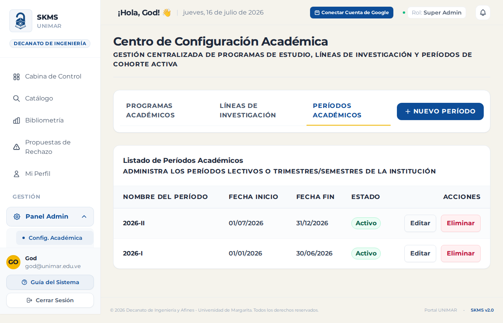
El SKMS-Unimar implementa el protocolo internacional de interoperabilidad OAI-PMH 2.0 en el endpoint /oai.
Esto permite que indexadores académicos globales (como Google Scholar, Latindex y repositorios nacionales) cosechen automáticamente las publicaciones en formato Dublin Core XML (oai_dc) tan pronto como el Coordinador de Investigación cambie el estado de un documento a Publicado.
Cada registro publicado expone las etiquetas estandarizadas:
dc:title - Título del trabajo.dc:creator - Estudiante/Autor.dc:subject - Línea de investigación/palabras clave.dc:description - Resumen estructurado.dc:date - Fecha de aprobación y publicación.dc:type - Tipo de producción (Tesis/Artículo).dc:rights - Licencias de uso Creative Commons especificadas.En la pantalla de inicio de sesión, haga clic en ¿Olvidó su contraseña?, ingrese su correo institucional y siga las instrucciones enviadas para establecer una nueva clave de acceso.
El validador integrado en el formulario de carga limita los archivos a un máximo de 20 MB para asegurar un rendimiento óptimo en conexiones de banda reducida.
En la barra superior de navegación, el sistema le mostrará un selector llamado "Perfil activo" en donde podrá intercambiar su rol de forma instantánea sin necesidad de cerrar sesión.